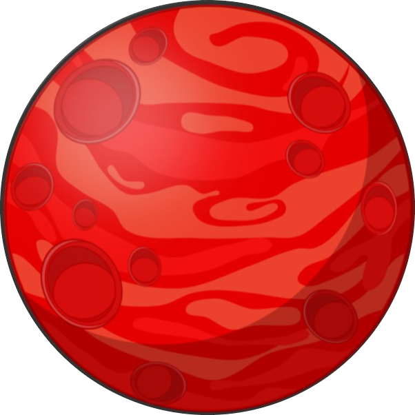
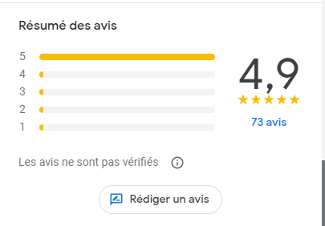

 O'Mars est né le 1er novembre 2022
Le premier restaurant a été crée au 3ème arrondissement de Marseille
Nous comptons actuellement 7 restaurants en France
Le nom "O'Mars" a été pensé par un des fondateurs qui trouvait que cette planète ressemblait à un tacos
| |
|---|
| |
|---|
| |
|---|
Ces 3 hommes à l'air très concentré sont les fondateurs de cette excellente franchise, malheurseusement Mickael s'est fait poursuivre pour fraude fiscal et s'est échapé à Dubai avec 67% du chiffre d'affaire du mois de novembre d'O'Mars. Veuillez nous contacter si vous l'apercevez par hasard.
 Votre avis compte beaucoup pour nous, nous avons la fierté d'être noté à 4.9 étoiles sur google, toutes critiques est la bienvenu si constructif